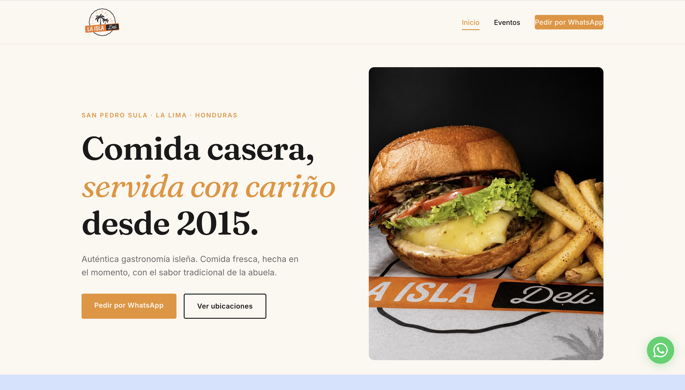
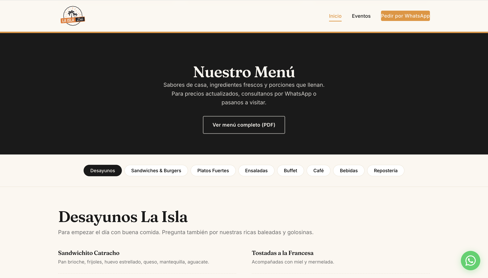
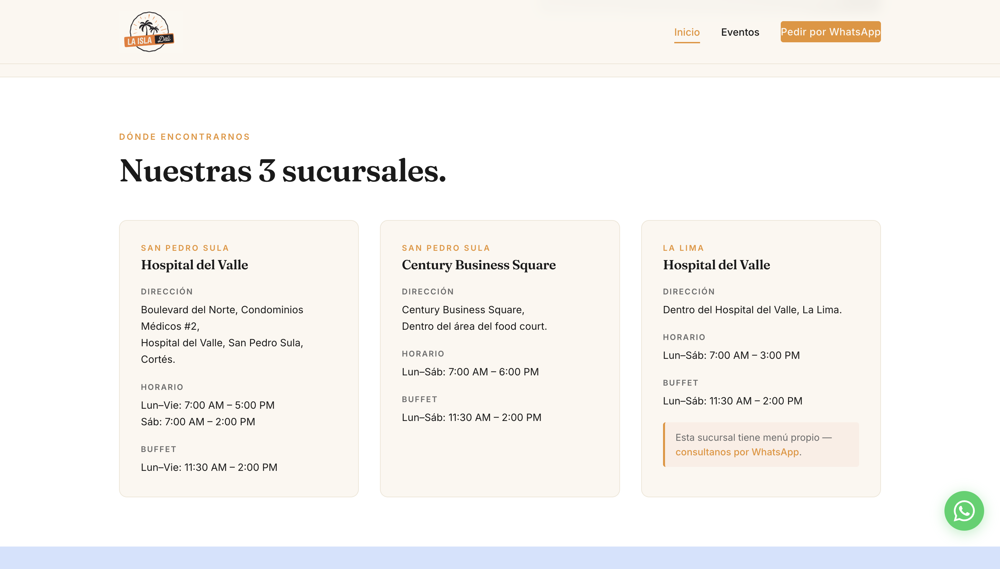
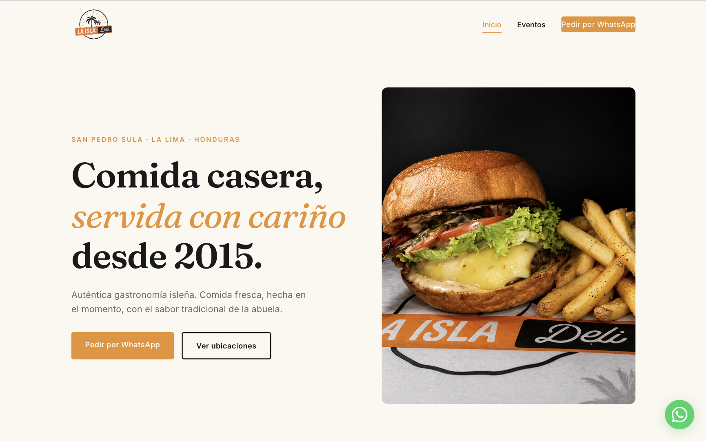
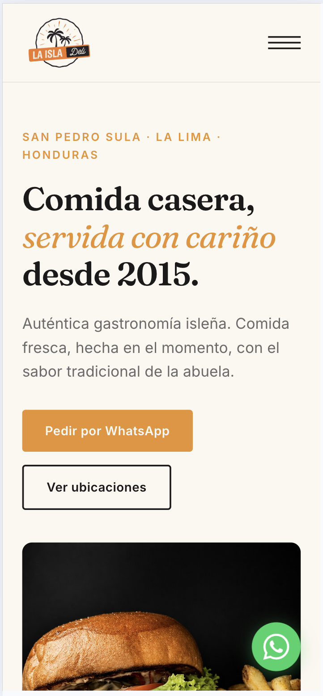

A full website for a 3-location island-food restaurant in Honduras — designed and built from scratch, with WhatsApp-first ordering and event inquiries.
La Isla Deli is a home-style island-food restaurant born in Roatán in 2015, now serving three locations across San Pedro Sula and La Lima. They had no website — no easy way for customers to find locations, browse the menu, or ask about events.
I designed and built the full site from scratch: a branded single-page layout, a categorized menu spanning breakfast to dessert, all three branches with hours and buffet times, an about section, and a dedicated events page. Instead of forcing a contact form, I built ordering and event inquiries around WhatsApp — because that's how Hondurans actually reach a business.
The result is one clean link the deli can drop on Instagram, Facebook, or Google that turns a curious scroll into an order or a booking.
Tools: HTML · CSS · JavaScript · Figma

The menu is the heart of the site. La Isla Deli serves everything from breakfast to main plates to dessert and drinks, so a single flat list would have buried the range. I organized it into clear categories so a visitor can jump straight to what they're craving.
Each section is laid out for fast scanning on a phone — the way most people actually browse a restaurant before deciding to order.

La Isla Deli isn't one location — it's three, across San Pedro Sula and La Lima, each with its own hours and buffet times. The site lays all three out clearly so customers know exactly where to go and when.
Handling multiple branches with different schedules is the kind of real-world detail that separates a template from a site built for an actual business.

Most restaurant templates default to a contact form. In Honduras, that's the wrong call — people live on WhatsApp. So I built ordering and event inquiries to route straight into a WhatsApp chat, plus a dedicated Eventos page for gatherings and bookings.
It's a small decision that matches how customers actually behave, and it removes friction between "I'm interested" and "I'm talking to the deli."
Design the contact flow around how people already communicate — not around what a template assumes.
Restaurant sites are mostly viewed on phones, so the layout was built to work cleanly across desktop and mobile.

